Appendix E — ggplot
E.1 Learning Objectives
By the end of this chapter, you will be able to:
Understand the basic structure of a ggplot and how it builds layer by layer.
Map data variables to visual aesthetics like position, colour and shape.
Add and customise plot elements such as labels, themes, and titles.
Use facets to compare subgroups effectively.
Apply best practices for clear, meaningful visualisations.
Data visualisation helps us see relationships, patterns and surprises that tables of numbers can easily hide. In this chapter, we’ll use ggplot2{Wickham et al. (2026)}, part of the tidyverse, to build clear graphics step by step.
We’ll use our dataset of penguin measurements to explore how different species vary in their culmen dimensions. You’ll learn how to go from a simple scatterplot to polished figures.
Note
This appendix is pre-course material: an introduction to building plots with ggplot2. Day 3 (Blocks 1–5) builds on it and covers figure design, themes, scales, extensions and saving in more depth.
The penguins data used here is loaded from files/chapter5.RDS (download it below and read it in with readRDS()). It keeps the original column names from the raw Palmer data, so bill measurements are called culmen_length_mm and culmen_depth_mm. In palmerpenguins::penguins and in the Day 3 chapters the same columns are called bill_length_mm and bill_depth_mm.
Tip
If you are struggling to write the code for your ggplot, try loading the esquisse Meyer & Perrier (2025) add-in to produce a point-and-click interface that will help you build your plot and produce R code at the end.
Building plots
We’ll be using the ggplot2 package to create data visualisations. It’s part of the tidyverse suite of packages. Although many people refer to it simply as ggplot, its official name is ggplot2.
ggplot2 uses a layered grammar of graphics, where plots are constructed through a series of layers. You start with a base layer (by calling ggplot), then add data and aesthetics, followed by selecting the appropriate geometries for the plot.
These first 3 layers give you the simplest version of a complete plot. You can then make the plot clearer and better looking by adding further layers such as scales, facets, coordinates, labels and themes.
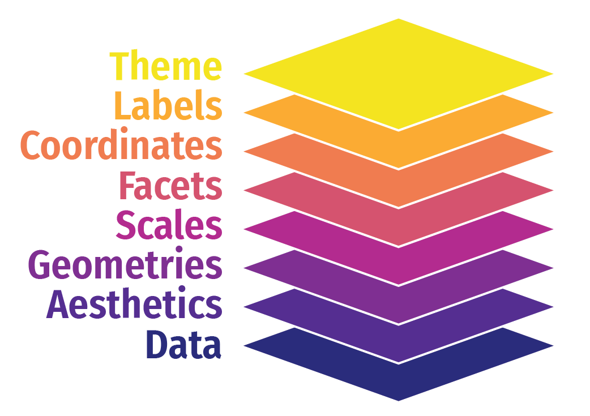
| study_name | sample_number | species | region | island | stage | individual_id | clutch_completion | date_egg | culmen_length_mm | culmen_depth_mm | flipper_length_mm | body_mass_g | sex | delta_15_n_o_oo | delta_13_c_o_oo | comments | year | mass_range |
|---|---|---|---|---|---|---|---|---|---|---|---|---|---|---|---|---|---|---|
| PAL0708 | 1 | Adelie | Anvers | Torgersen | Adult, 1 Egg Stage | N1A1 | Yes | 2007-11-11 | 39.1 | 18.7 | 181 | 3750 | Male | NA | NA | Not enough blood for isotopes. | 2007 | mid penguin |
| PAL0708 | 2 | Adelie | Anvers | Torgersen | Adult, 1 Egg Stage | N1A2 | Yes | 2007-11-11 | 39.5 | 17.4 | 186 | 3800 | Female | 8.94956 | -24.69454 | NA | 2007 | mid penguin |
| PAL0708 | 3 | Adelie | Anvers | Torgersen | Adult, 1 Egg Stage | N2A1 | Yes | 2007-11-16 | 40.3 | 18.0 | 195 | 3250 | Female | 8.36821 | -25.33302 | NA | 2007 | smol penguin |
| PAL0708 | 4 | Adelie | Anvers | Torgersen | Adult, 1 Egg Stage | N2A2 | Yes | 2007-11-16 | NA | NA | NA | NA | NA | NA | NA | Adult not sampled. | 2007 | NA |
| PAL0708 | 5 | Adelie | Anvers | Torgersen | Adult, 1 Egg Stage | N3A1 | Yes | 2007-11-16 | 36.7 | 19.3 | 193 | 3450 | Female | 8.76651 | -25.32426 | NA | 2007 | smol penguin |
| PAL0708 | 6 | Adelie | Anvers | Torgersen | Adult, 1 Egg Stage | N3A2 | Yes | 2007-11-16 | 39.3 | 20.6 | 190 | 3650 | Male | 8.66496 | -25.29805 | NA | 2007 | mid penguin |
Let’s build a basic scatterplot to show the relationship between flipper_length and body_mass. We will customise the plots further in later sections; for now, this gives a quick overview of the different layers.
- Layer 1 creates the base plot that we build upon.
-
Layer 2 adds the
dataand someaesthetics:- The data is passed as the first argument.
- Aesthetics are added via the mapping argument, where you define your variables (e.g., x or both x and y). This also lets you specify general properties, like the colour for grouping variables.
-
Layer 3 adds geometries, or
geom_?for short. This tells ggplot how to display the data points. Remember to add these layers with a+, rather than using a pipe (|>or%>%). You can also add multiple geoms if needed, for example, combining a violin plot with a boxplot. -
Layer 4 includes
scale_?functions, which let you customise aesthetics like colour. You can do much more with scales, but we’ll explore that later. -
Layer 5 introduces facets, such as
facet_wrap(), allowing you to add an extra dimension to your plot by showing the relationship you are interested in for each level of a categorical variable. -
Layer 6 involves coordinates, where
coord_cartesian()controls the limits for the x- and y-axes (xlim and ylim), enabling you to zoom in or out of the plot. - Layer 7 helps you modify axis labels.
-
Layer 8 controls the overall style of the plot, including background colour, text size and borders. R provides several predefined themes, such as
theme_classic,theme_bw,theme_minimal, andtheme_light.
Click on the tabs below to see how each layer contributes to refining the plot.
You won’t see any data points yet because we haven’t specified how to display them. However, we have mapped the aesthetics, indicating that we want to plot body_mass on the x-axis and flipper_length on the y-axis. This also sets the axis titles, as well as the axis values and breakpoints.
Tip
You don’t need to include data = or mapping = if you keep those arguments in the default order. Similarly, the first column name you enter in the aes() function will automatically be interpreted as the x variable, and the second as y, so you can omit specifying x and y if you prefer.
will give you the same output as the code above.
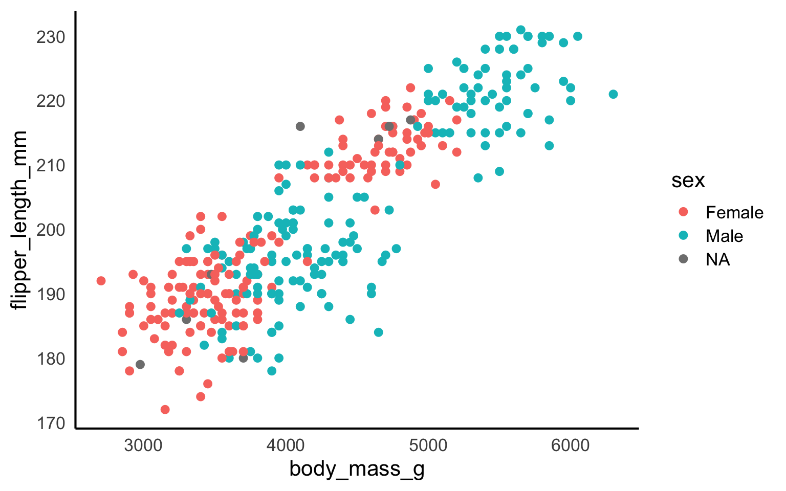
Here we are telling ggplot to add a scatterplot. You may notice a warning indicating that some rows were removed due to missing values.
The colour argument adds colour to the points based on a grouping variable (in this case, sex). If you want all the points to be black (showing only two dimensions rather than three), omit the colour argument.
ggplot(data = penguins, mapping = aes(x = body_mass_g, y = flipper_length_mm, colour = sex)) +
geom_point() +
# changes colour palette
scale_colour_brewer(palette = "Dark2") +
# add breaks from 2500 to 6500 in increasing steps of 500
scale_x_continuous(breaks = seq(from = 2500, to = 6500, by = 500)) 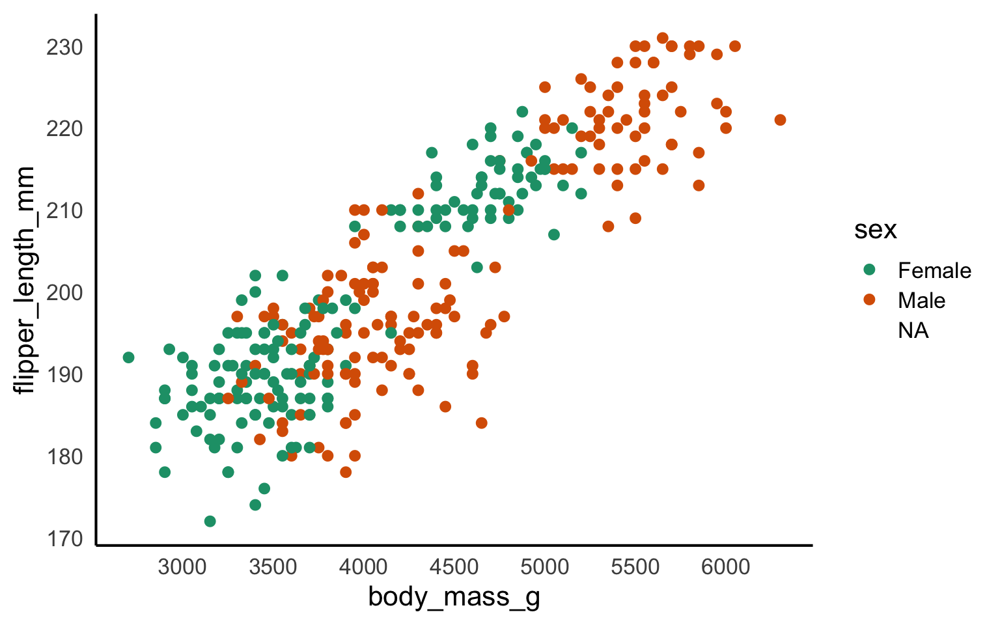
The scale_? functions allow us to modify the colour palette of the plot, adjust axis breaks, and more. You could change the axis labels within scale_x_continuous() as well or leave it for Layer 7.
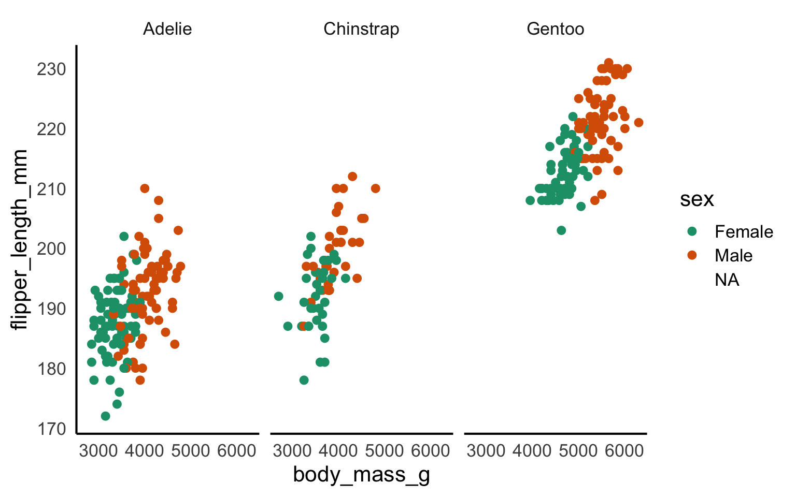
In this step, we’re using faceting to split the plot by species.
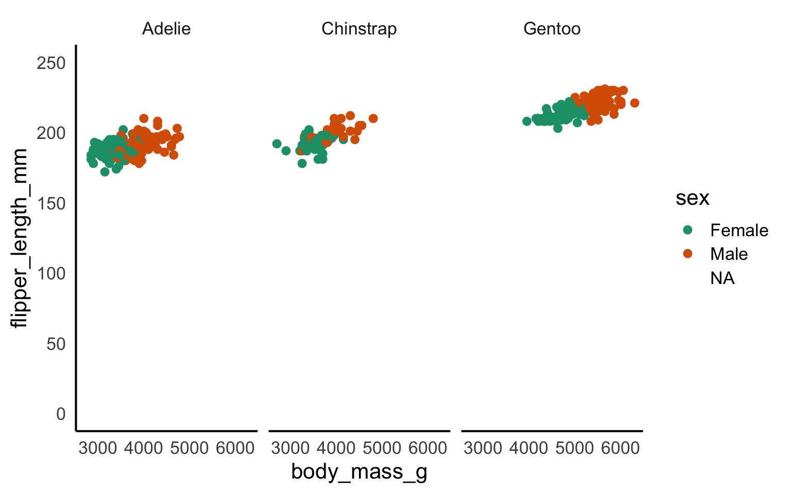
Here we adjust the limits of the y-axis to zoom out of the plot. If you want to zoom in or out of the x-axis, you can add the xlim argument to the coord_cartesian() function.
ggplot(data = penguins, mapping = aes(x=body_mass_g, y=flipper_length_mm, colour=sex)) +
geom_point() +
scale_colour_brewer(palette = "Dark2") +
facet_wrap(~ species) +
labs(x = "Body Mass (in g)", # labels the x axis
y = "Flipper length (in mm)", # labels the y axis
colour = "Sex") # labels the grouping variable in the legend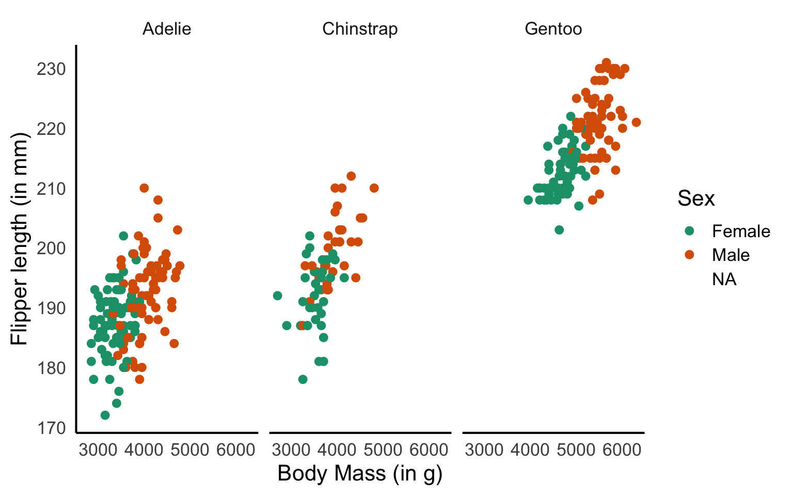
You can change the axis labels using the labs() function, or you can modify them when adjusting the scales (e.g., within the scale_x_continuous() function).
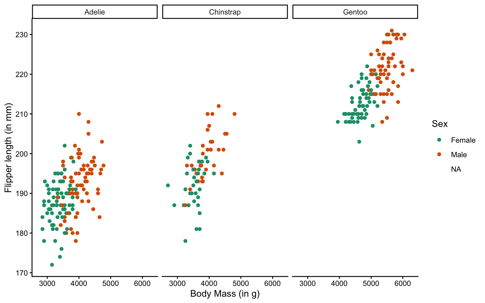
The theme_classic() function is applied to change the overall appearance of the plot.
Important
You need the first three layers to create your base plot. Everything else is optional, so you don’t need to use all eight layers. Layers 4-8 can be added in any order (more or less), whereas layers 1-3 must follow a fixed sequence.
E.2 Exploring Common Geom Types
So far we have only made a scatterplot, but ggplot offers many more geoms. This chapter works through some of the most common ones.
| Data type | Example geom | Purpose |
|---|---|---|
| Continuous–continuous |
geom_point(), geom_line(), geom_smooth()
|
Relationships/trends |
| Categorical–continuous |
geom_boxplot(), geom_violin(), geom_col()
|
Comparisons |
| Continuous |
geom_histogram(), geom_density()
|
Distributions |
E.3 Histogram (geom_histogram())
If you want to show the distribution of a continuous variable, you can use a histogram. As with every plot, you need at least 3 layers to create a base version of the plot. Like geom_bar(), geom_histogram() only requires an x variable as it does the counting “in the background”.
A histogram divides the data into “bins” (i.e., groupings displayed in a single bar). These bins are plotted along the x-axis, with the y-axis showing the count of observations in each bin. It’s basically a barchart for continuous variables.
Let’s have a look at the weight distribution in our dataset.
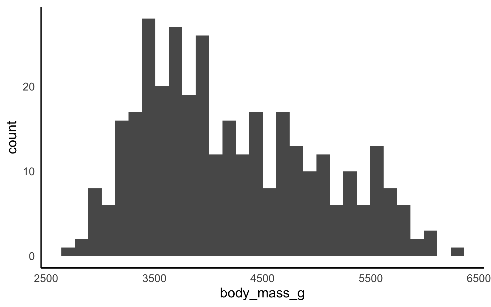
The default number of bins is 30 (as shown in Figure E.1 above). Changing the number of bins (argument bins) makes the histogram coarser or finer. More bins show more detail.
Perhaps it’s more intuitive to modify the width of each bin using the binwidth argument. For example, binwidth = 1 for the weight category would mean each “weight group” represents 1 g, while binwidth = 50 would group weights into 50 g spans. The plots below show modifications for both bins and binwidth.
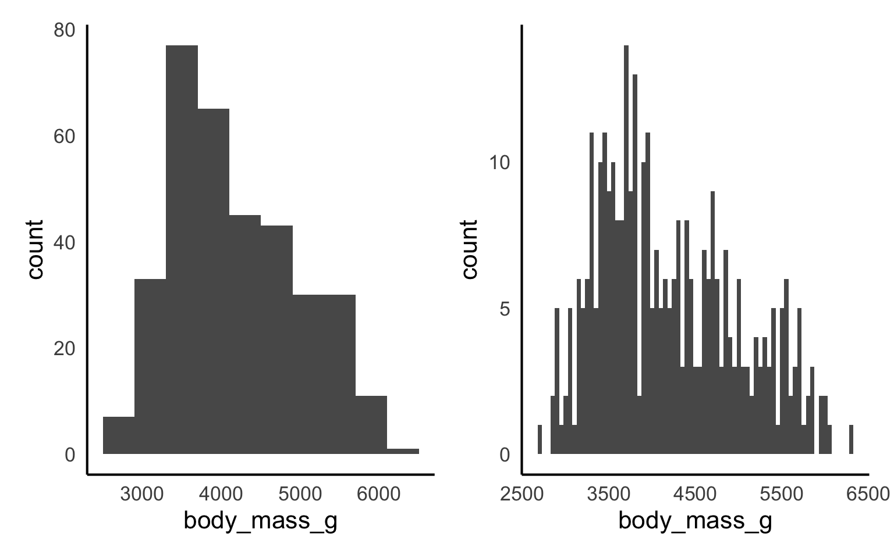
The warning message tells us 2 rows of data were removed due to containing non-finite outside the scale range. Have a look at the body mass column (penguins) to see if you can decipher the warning message.
The rows were removed because .
Click through each tab to see how you can modify colours, axis labels, margins, and breaks, and apply a different theme.
We can change the plot colours by adding a fill argument and a colour argument. The fill argument changes the colour of the bars, while the colour argument modifies the outline of the bars. Note that these arguments are added directly to the geom_histogram(), rather than within the overall aes(), because we want every bar to be the same colour rather than mapping colour to a variable.
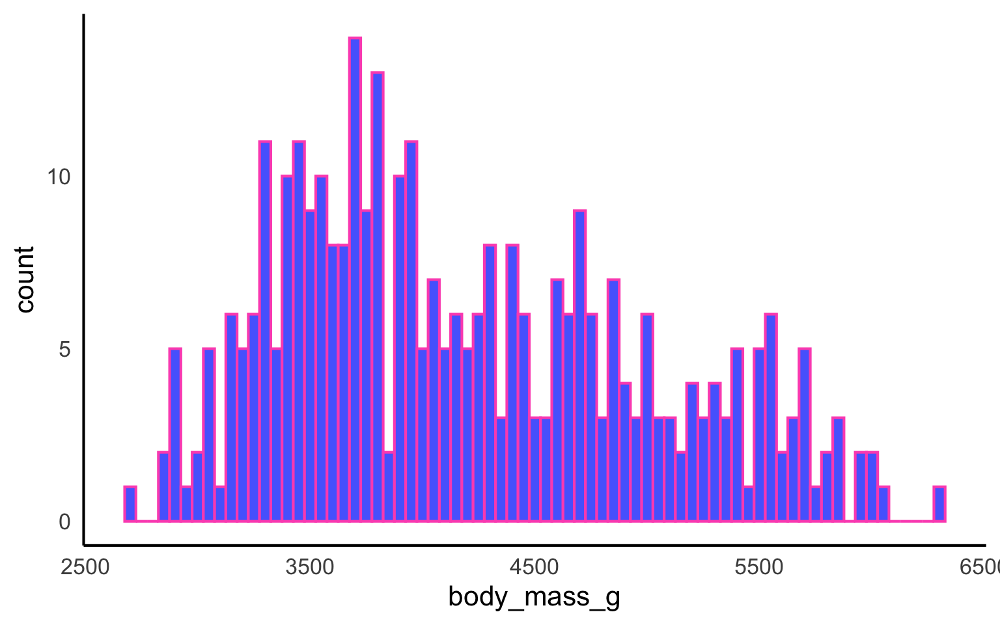
Tip
You could use:
Hex codes for
fillandcolour, as we did here:geom_histogram(binwidth = 50, fill = "#586cfd", colour = "#FC58BE"). If you want to create your own colours, check out this website.Pre-defined colour names:
geom_histogram(binwidth = 50, fill = "purple", colour = "green"). See the full list here.
Here we removed the label for the y-axis Count (to show you some variety) and modified the breaks. The y-axis is now displayed in increasing steps of 5, and the x-axis has a break every 500 g.
Notice how the breaks = argument changes the labels of the break ticks but not the scale limits. You can adjust the limits of the scale using the limits = argument. To make the effect obvious, we set the limits to 2000 and 7000. See how the values from 2000 to 2500, and 6500 to 7000 do not have labels? You would need to adjust that using the breaks = argument.
The expansion() function removes the gap between the x-axis and the bars.
ggplot(penguins, aes(x = body_mass_g)) +
geom_histogram(binwidth = 50, fill = "#586cfd", colour = "#FC58BE") +
labs(x = "Body mass in (g)", # renaming x axis label
y = "") + # removing the y axis label
scale_y_continuous(
# remove the space below the bars (first number), but keep a tiny bit (5%) above (second number)
expand = expansion(mult = c(0, 0.05)),
# changing break points on y axis
breaks = seq(from = 0, to = 20, by = 5)
) +
scale_x_continuous(
# changing break points on x axis
breaks = seq(from = 2500, to = 6500, by = 500),
# Experimenting with the scale limits
limits = c(2000, 7000)
)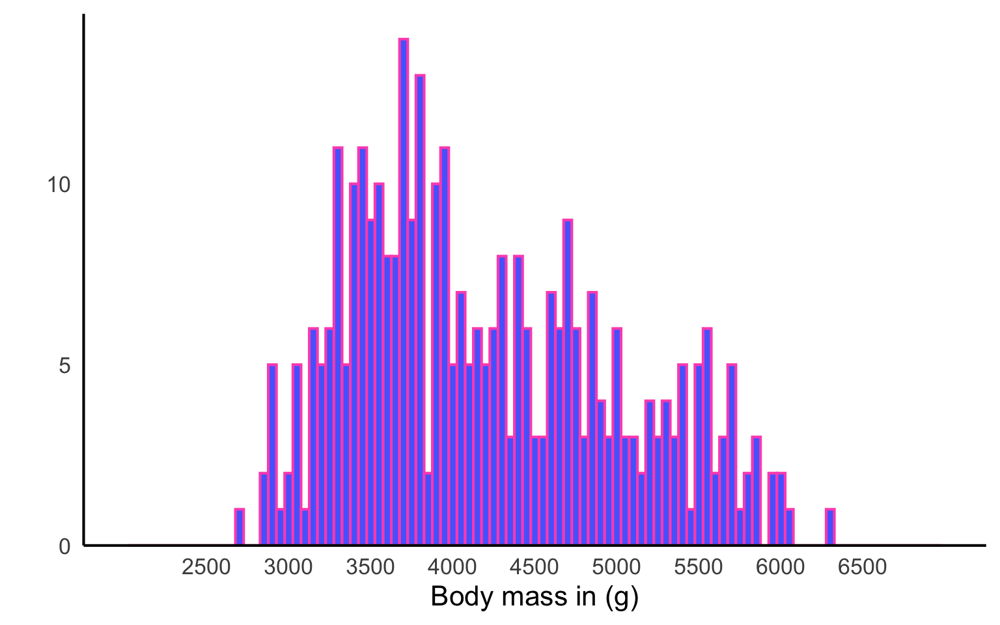
Let’s experiment with the themes. For this plot we have chosen theme_bw():
ggplot(penguins, aes(x = body_mass_g)) +
geom_histogram(binwidth = 50, fill = "#586cfd", colour = "#FC58BE") +
labs(x = "Body mass in (g)", # renaming x axis label
y = "") + # removing the y axis label
scale_y_continuous(
# remove the space below the bars (first number), but keep a tiny bit (5%) above (second number)
expand = expansion(mult = c(0, 0.05)),
# changing break points on y axis
breaks = seq(from = 0, to = 20, by = 5)
) +
scale_x_continuous(
# changing break points on x axis
breaks = seq(from = 2500, to = 6500, by = 500),
# Experimenting with the scale limits
limits = c(2000, 7000)
)+
theme_bw()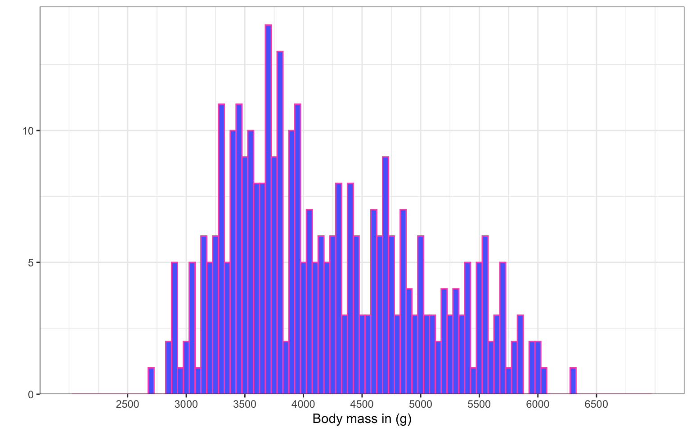
E.4 Scatterplot (geom_point())
Scatterplots are appropriate when you want to plot two continuous variables. We can also add a trendline by using geom_smooth(). The default trendline is loess. If you want a linear trendline, you would need to add method = "lm" inside the geom_smooth() function.
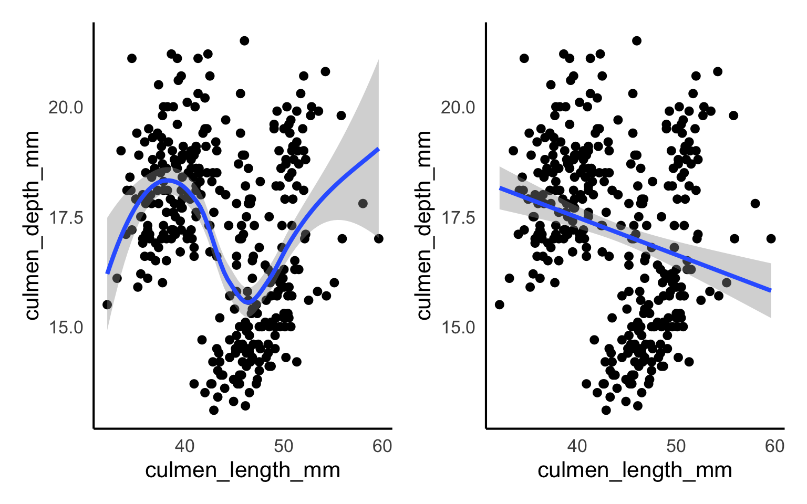
Customising the colour of a scatterplot is slightly different from the other plots we’ve encountered so far. Technically, the point is not a “filled-in black area” but rather an extremely wide outline of a circle. Therefore, we cannot use the usual fill argument and instead need to use the colour argument, similar to how we customised the outline of the histogram.
See the tabs below to learn how to change the colour for all points or how to adjust the colour based on groupings.
If we want to change the colour of all the points, we can add the colour argument to the geom_point() function. Likewise, to change the colour of the trendline, we would also use the colour argument. Here, we used pre-defined colour names, but HEX codes would work just as well.
If we want the points to change colour based on another grouping variable, the colour argument should go inside the aes(). If you don’t want to define the colours manually, you can use a colour palette like Brewer (scale_colour_brewer()) or Viridis (scale_colour_viridis_d()).
You can tidy the legend title and group labels using the scale_colour_? function, depending on the palette you’re using (e.g., scale_colour_manual(), scale_colour_brewer and many more).
Your turn
All other layers remain exactly the same as in other plots. Try adding layers to make the plot above prettier:
ggplot(data = penguins, aes(x=culmen_length_mm, y=culmen_depth_mm, colour = species)) +
geom_point()+
geom_smooth(method = "lm",
show.legend = FALSE)+ # stop this layer from appearing in the legend.
scale_colour_manual(values = c("darkorange", "cyan", "purple"),
name = "Species",
labels = c("Adelie penguin", "Chinstrap penguin", "Gentoo penguin"))+
labs(x = "Bill length (mm)", y = "Bill depth (mm)")+
theme_classic() + # place before moving the legend position
theme(legend.position = "top") # move legend to the top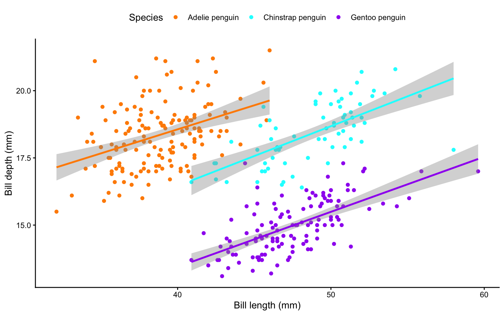
E.5 Boxplot (geom_boxplot())
A boxplot is one way to display a continuous variable with a categorical grouping variable.
Tada! As usual, we can enhance the plot by adding various layers. Click on each tab below to see how.
We can change the colour by adding a fill argument inside the aes(). To customise the colours further, we can add a scale_fill_? layer. If you have specific colours in mind, use scale_fill_manual(). If you prefer pre-defined palettes, such as Brewer, you can use scale_fill_brewer().
We need to relabel the axes. The function to use depends on the variable type. Here, we need scale_x_discrete() for the x-axis and scale_y_continuous() for the y-axis. We can also tidy up the group labels and adjust the breaks on the y-axis (e.g., in steps of 500 g) within these same functions.
ggplot(penguins, aes(x = species, y = body_mass_g, fill = species))+
geom_boxplot()+
scale_fill_brewer(palette = "Dark2")+
scale_x_discrete(
# changing the label of x
name = "Species",
# changing the group labels of the 3 groups
labels = c("Adelie penguin", "Chinstrap penguin", "Gentoo penguin")) +
scale_y_continuous(
# changing name of the y axis
name = "Body mass (g)",
# changing break labels
breaks = c(seq(from = 3000, to = 6000, by = 500))
)The legend is superfluous; best to take it off. We can remove the legend by adding the argument guide = "none" to the scale_fill_? function.
Let’s pick a theme we haven’t used yet: theme_dark().
ggplot(penguins, aes(x = species, y = body_mass_g, fill = species))+
geom_boxplot()+
scale_fill_brewer(palette = "Dark2",
guide = "none")+
scale_x_discrete(
# changing the label of x
name = "Species",
# changing the group labels of the 3 groups
labels = c("Adelie penguin", "Chinstrap penguin", "Gentoo penguin")) +
scale_y_continuous(
# changing name of the y axis
name = "Body mass (g)",
# changing break labels
breaks = c(seq(from = 3000, to = 6000, by = 500))
) +
theme_dark()
E.6 Violin plot (geom_violin())
An alternative way to display a continuous variable with a categorical grouping variable is a violin plot.
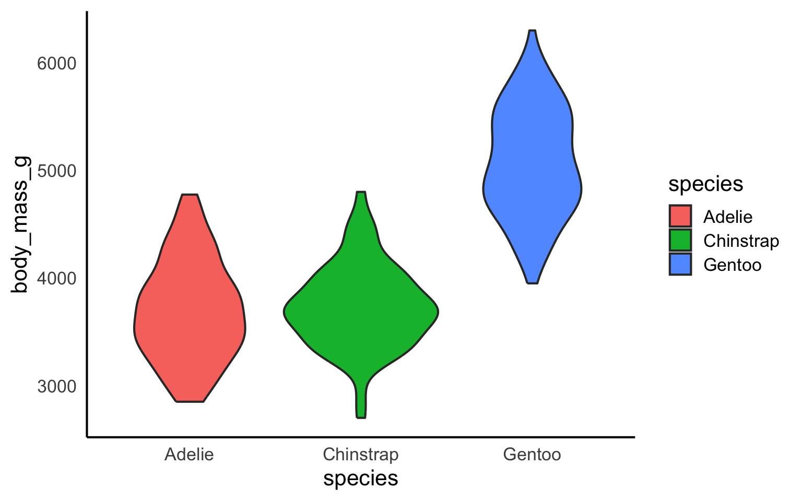
Your turn
Adjusting the violin plot would be exactly the same as the boxplot. Try to add layers to the base plot above to:
ggplot(penguins, aes(x = species, y = body_mass_g, fill = species))+
geom_violin()+
scale_fill_brewer(palette = "Dark2",
guide = "none")+
scale_x_discrete(
# changing the label of x
name = "Species",
# changing the group labels of the 3 groups
labels = c("Adelie penguin", "Chinstrap penguin", "Gentoo penguin")) +
scale_y_continuous(
# changing name of the y axis
name = "Body mass (g)",
# changing break labels
breaks = c(seq(from = 3000, to = 6000, by = 500))
)+
theme_bw()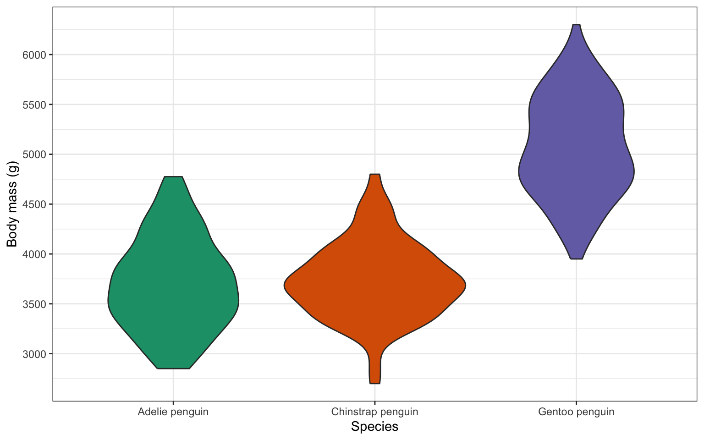
E.7 Violin-boxplots
So far, we’ve only added one geom_? layer to our plots. However, thanks to ggplot’s layered system, we can add multiple geoms, for example, when creating a violin-boxplot.
Remember, the order of the layers can sometimes make a difference. We’ve seen this already - adding a theme at the end can override earlier arguments like the legend position. Similarly, ggplot + violinplot + boxplot will look different from ggplot + boxplot + violinplot.
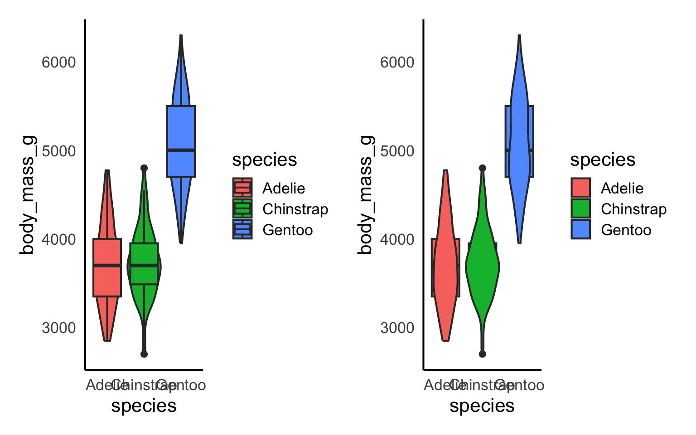
See the tabs below to learn how to customise various elements, such as the width of the boxes, and the colour or opacity.
If we want to get any information from the boxplot, we need to place it “on top of” the violin plot. But still, the boxplot is pretty wide and covers important details from the violin plot. To make the information more visible, we can adjust the width of the boxes. Finding an appropriate width might take some trial and error.
Adding colour should be pretty straightforward by now. The code is no different from what we used for the boxplot or violin plot. We need to add the fill argument within the aes(), along with a scale_fill_? layer.
However, we can further customise the plot by adding an opacity argument using alpha to the violin plot geom.
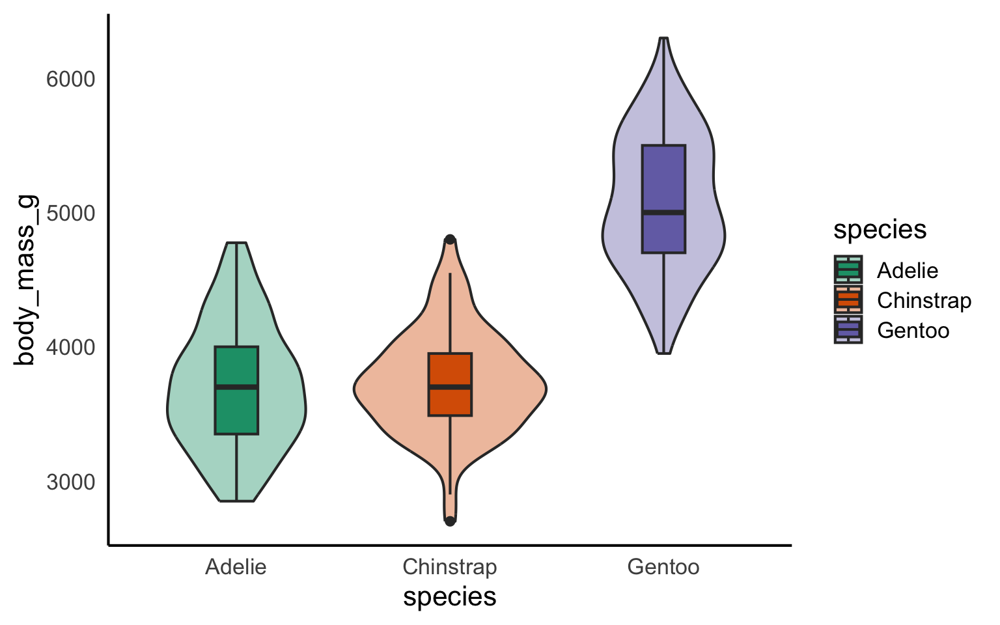
Your turn
ggplot(penguins, aes(x = species, y = body_mass_g, fill = species))+
geom_violin(alpha = 0.4) +
geom_boxplot(width = 0.2) +
scale_fill_brewer(palette = "Dark2",
guide = "none")+
scale_x_discrete(
# changing the label of x
name = "Species",
# changing the group labels of the 3 groups
labels = c("Adelie penguin", "Chinstrap penguin", "Gentoo penguin")) +
scale_y_continuous(
# changing name of the y axis
name = "Body mass (g)",
# changing break labels
breaks = c(seq(from = 3000, to = 6000, by = 500))
)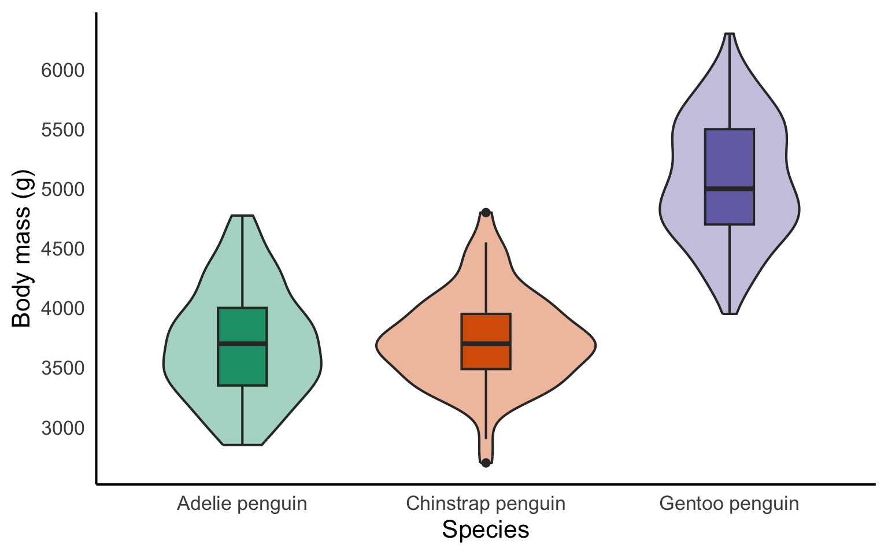